a set of steps to accomplish a task
think of algorithms in everyday life
What distinguishes an algorithm that runs on a computer from an algorithm that you run?
what do I mean by precisely enough?
To be interesting, an algorithm must solve a general, well-specified problem.
An algorithmic problem is specified by describing the complete set of instances it must work on and of its output after running on one of these instances
Given an input to a problem, it should always produce a correct solution to the problem, and it should use computational resources efficiently while doing so.
Additionally, we prefer algorithms that are easy to implement.
Problem: Sorting
Input: A sequence of $n$ keys $a_1, \cdots , a_n$.
Output: The permutation (reordering) of the input sequence such that $a_1’ \leq a_2’ \leq \cdots \leq a_{n−1}’ \leq a_n’$.
An instance of sorting might be an array of names, like {Mike, Bob, Sally, Jill, Jan}, or a list of numbers like {154, 245, 568, 324, 654, 324}.
We need some way to express the sequence of steps comprising an algorithm.
In order of increasing precision, we have English, pseudocode, and real programming languages.
Unfortunately, ease of expression moves in the reverse order.
We will use a Python-like pseudocode which will occasionally include short english phrases.
A data structure is a way to store and organize data in order to facilitate access and modifications.
No single data structure works well for all purposes, and so it is important to know the strengths and limitations of several of them.
This is the MOST IMPORTANT course in your entire curriculum!!
For any algorithm, we must prove that it always returns the desired output for all legal instances of the problem.
For sorting, this means even if (1) the input is already sorted, or (2) it contains repeated elements.
It is seldom obvious whether a given algorithm correctly solves a given problem.
Correct algorithms usually come with a proof of correctness, which is an explanation of why we know that the algorithm must take every instance of the problem to the desired result
Problem: Robot Tour Optimization
Input: A set S of n points in the plane.
Output: What is the shortest cycle tour that visits each point in the set S?

What resources do we care about?
What does it mean for an algorithm to use computational resources efficiently?
We will mostly care about time, sometimes even at the cost of accuracy.
Unlike correctness, which does not depend on the particular computer that the algorithm runs on, the actual running time of an algorithm depends on several factors extrinsic to the algorithm itself.
Can we evaluate the speed of an algorithm by implementing it in a real programming language?
How then, can we compare two algorithms for a problem?
Idea 1: how long the algorithm takes as a function of the size of its input
Idea 2: focus on how fast the function grows with the input size